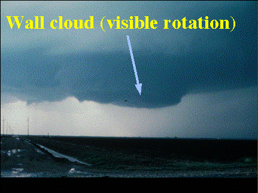
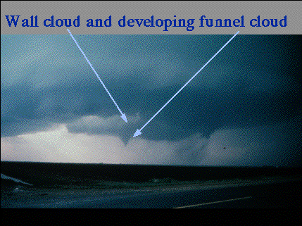

Updraft Influences
Loading time: 3 minutes
for 28.8 modem.
Rotation within the wall cloud becomes
apparent as the cloud lowers in the sky. The rainshaft (downdraft)
can be seen to the right of the wall cloud. As time progress a smaller
rotating column of air begins to drop out of the wall cloud. This
is known as the funnel cloud.


What Makes A Thunderstorm
Rotate? 
 Tornadoes
Tornadoes